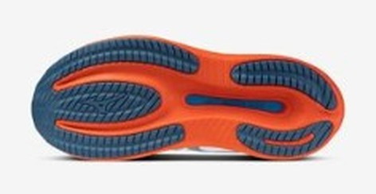
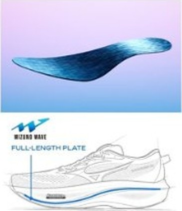

DAILY｜デイリートレーナー
30代目で、別の靴になった。
「硬くて真面目なミズノの定番」はもう過去の話だ。ウエーブライダー 30はドロップを12mmから8mmへ、スタックを42.5mmへ変え、ほぼ別の靴になった。1足でジョグからビルドアップまで回すなら、デイリー3足の中で最も守備範囲が広い。
1足で幅広いペースを走りたい人。長時間のLSDをやる人。長持ちする靴がほしい人。
従来の硬い接地感が好きだったライダーファン。軽さ最優先の人。


普通、これだけ厚くすれば不安定になる。それを抑えているのが2点だ。中足部を約14mm、後足部を約4mm広げた土台と、歴代で初めて前足部まで伸ばしたフルレングスの樹脂プレート。厚さで衝撃を吸い、幅とプレートでブレを止める。カーボンではなく樹脂なので、レース靴のような強い推進ではなく、「芯」を作る役割と読むのが正しい。
ドロップ（かかとと前足部の高低差）が4mm減った。かかとから落ちる従来の走りより、足裏全体で受ける感覚に近づく。長年ライダーを履いてきた人は、ふくらはぎやアキレス腱に普段と違う張りが出ないか、最初の数回は距離を抑えて確認したい。
クッション性は+17%、反発性は+19%と報告されている。上層の超臨界TPU系の柔らかさと、下層EVAの支えを組み合わせたバランス型で、弾力全振りのノヴァブラスト 6、減衰重視のゴースト 18のちょうど中間にいる。
バーの左端がキロ4:00、右端がキロ7:00。
寿命データのある6足で試算した概算。シエロとアディオスは350km、プロ5は500km、デイリーは想定寿命の中間値（ライダーは800km）で計算。
| ウエーブライダー 30 | ノヴァブラスト 6 | ゴースト 18 | |
|---|---|---|---|
| 価格 | ¥18,700 | ¥17,600 | ¥19,800 |
| 重量 | 約265g（27.0cm） | 約253g（US9） | 290g（27.0cm） |
| スタック | 42.5/34.5mm | 41.5/33.5mm | 36/26mm |
| 適正ペース | キロ4:30〜6:30 | キロ4:30〜5:30 | キロ5:00〜6:30 |
| 想定寿命 | 800km以上 | 約600〜800km | 約640〜800km以上 |
価格も重量も3足の真ん中で、ペース幅と寿命はトップ。突出した長所を持たない代わりに、弱点が少ない。1足だけ買うなら数字上はこの靴が最も堅い。
往年の硬い接地感が一新され、豊かなクッションと高反発を備えた現代的な厚底に変わったと評価されている。足入れは歴代で最も容積が広く、厚手のタンとカラーパッドのおかげで、長時間のLSDでも局所的な圧迫が出にくい。
耐摩耗X10ラバーと下層EVAでミッドソールを守り、800km以上の使用に耐えるとされる。1kmあたり約23円（¥18,700÷800km）で、寿命のデータがあるモデルで最も安い。靴に何度もお金をかけられない人には、この数字が大きい。
平日のジョグから週末のロング、たまのビルドアップまで、これ1足で回せる。レース靴を足すなら、組み合わせはエンドルフィン プロ5。ワイドで安定したレース靴と、脚を守るこの靴の組み合わせは、サブ3.5〜4の構成として無理がない。
30代目で最も大きく変わった。最も広いペース幅と最も長い寿命、そして最も低い距離単価。突出しない代わりに外しにくい。デイリーの1足を選ぶなら、まずここから検討すればいい。
※本記事はメーカー公表値と国内外のレビューをもとにした分析です。1kmあたりの費用は想定寿命からの概算です。